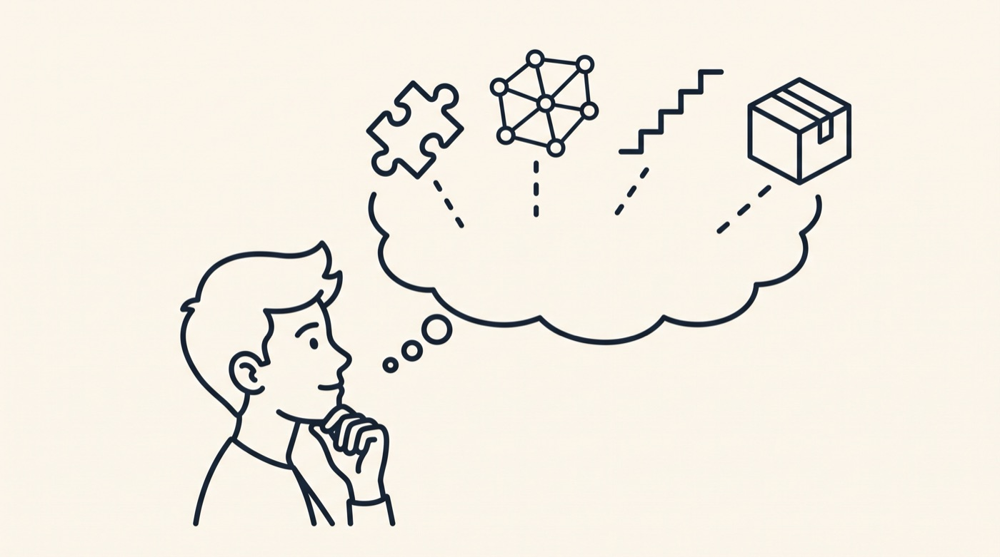
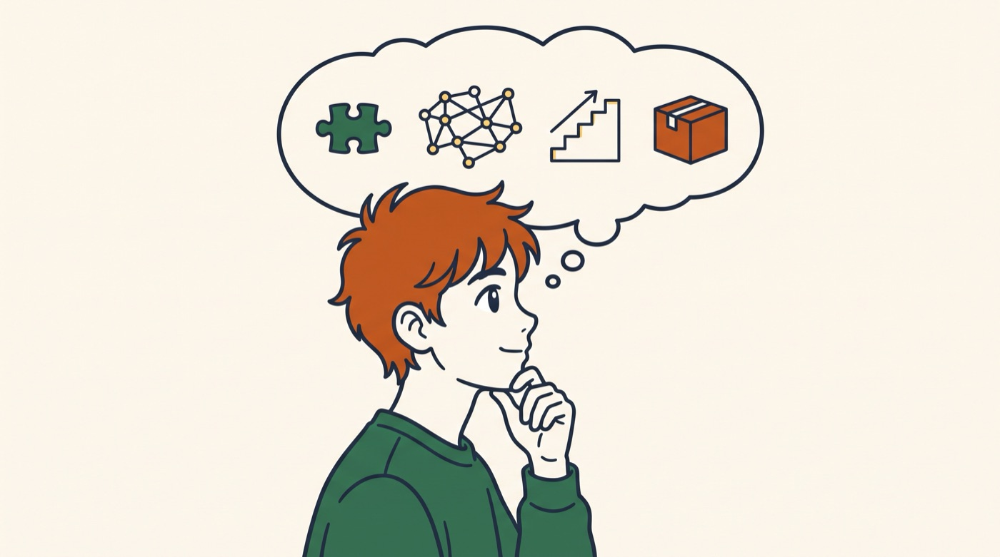
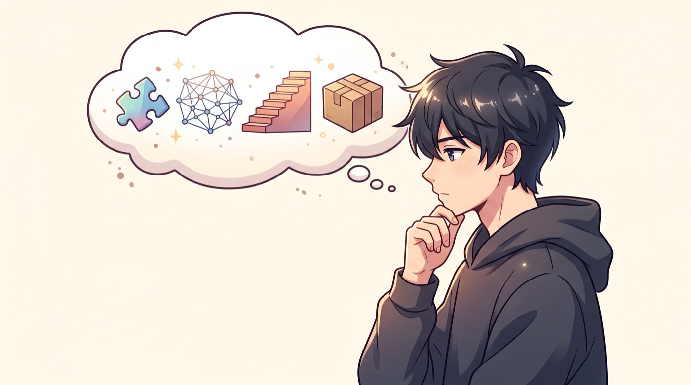
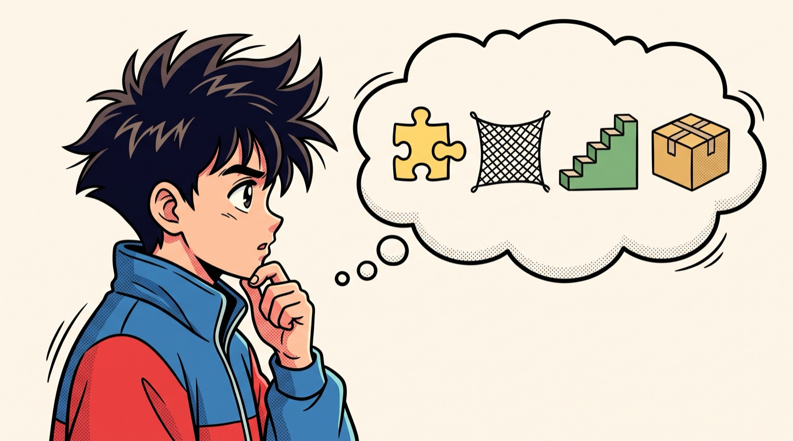
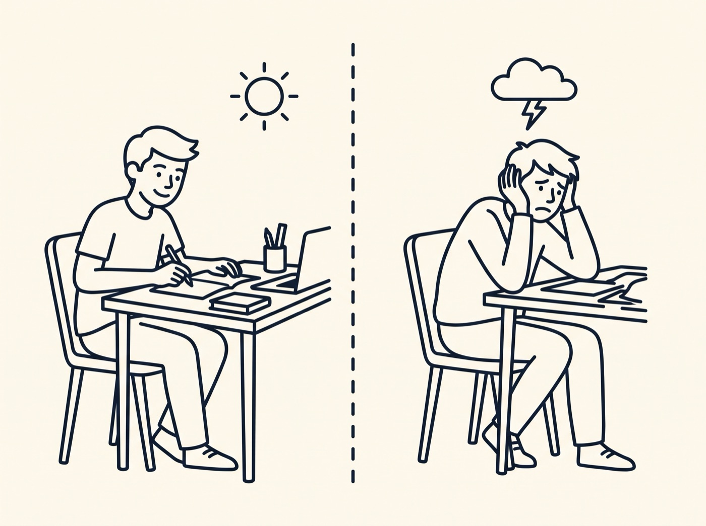
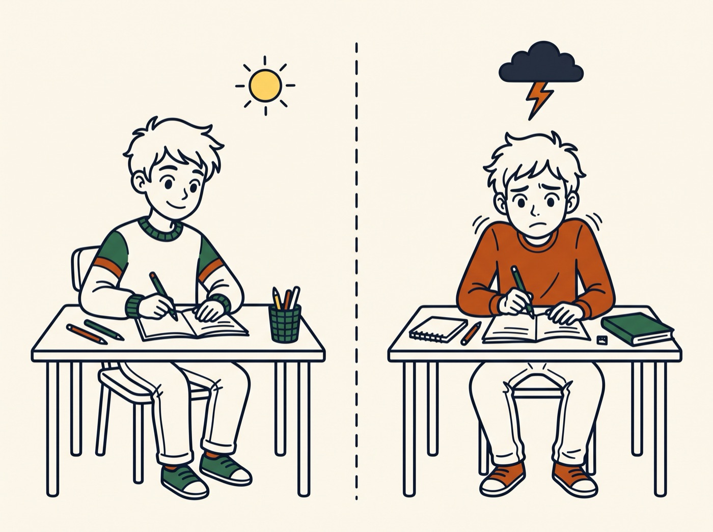
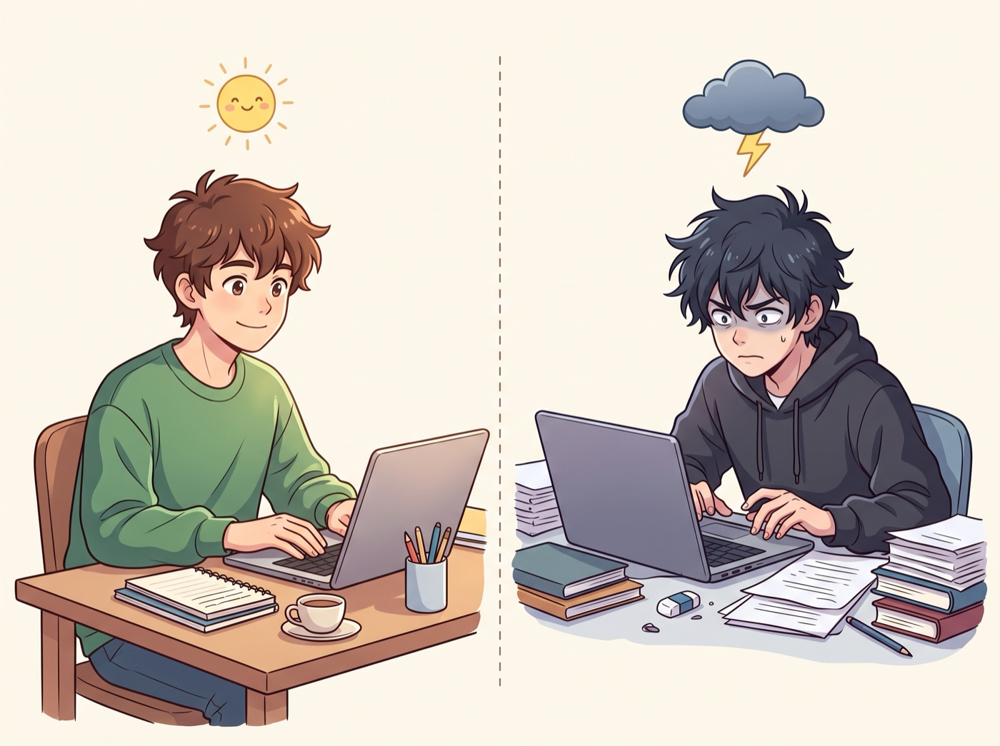
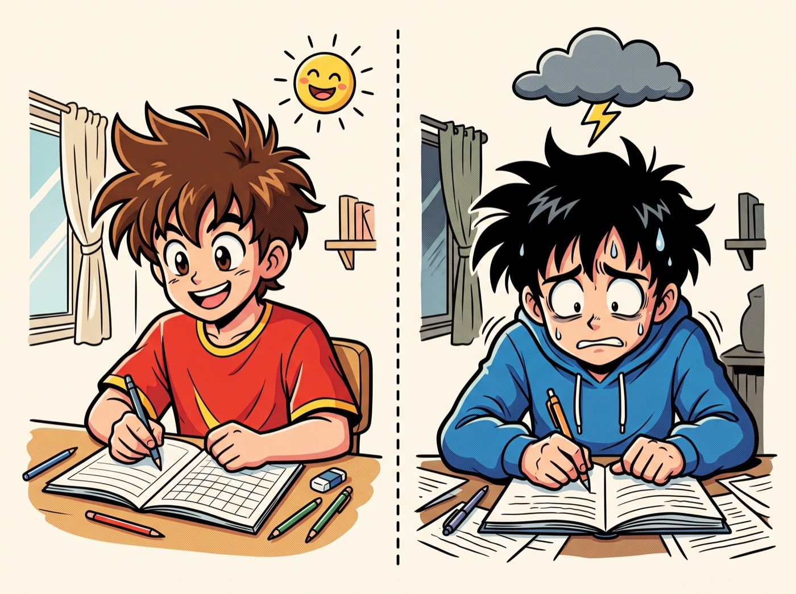

Von links: bisherige Strichzeichnung, Zwischenlösung (Strichzeichnung mit Akzentfarben und Manga-Gesichtern), weicher Anime, Retro-Manga. Temporäre Datei, kann nach der Entscheidung gelöscht werden.







